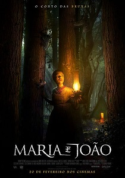

João e Maria O Conto das Bruxas.
Estreia nacional: 20 de fevereiro de 2020.
- Direção: Osgood Perkins (II);
- Elenco: Sophia Lillis, Alice Krige, Jessica De Gouw, Ian Kenny, Charles Babalola, Samuel Leakey, Abdul Alshareef, Beatriz Perkins e Manuel Pombo;
- Nacionalidade: EUA;
- Produtor: ;
- Gênero: terror, fantasia e suspense;
- Censura: 14 anos;
- Duração: 88 minutos;
- Sinopse: Desta vez, as migalhas nos guiarão por um caminho muito mais sombrio e perturbador. Durante um período de escassez, Maria (Sophia Lillis) e seu irmão mais novo, João (Sammy Leakey), saem de casa e partem para a floresta em busca de comida e sobrevivência. É quando encontram uma senhora (Alice Krige), cujas intenções podem não ser tão inocentes quanto parecem, que eles descobrem que nem todo conto de fadas tem final feliz.
Para ver o teaser, em inglês, clique aqui.